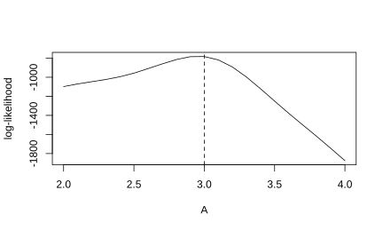
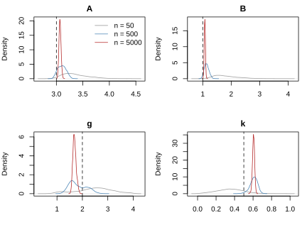
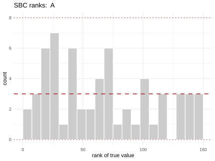
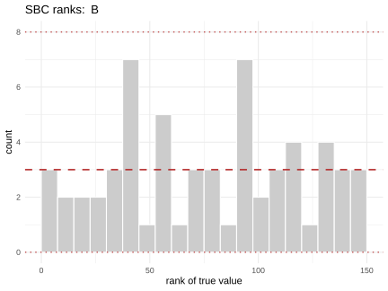
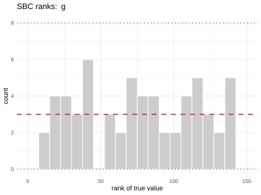
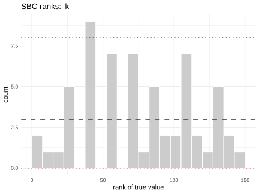
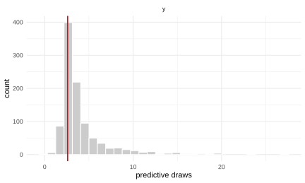

Neural likelihood estimation, and handing it to Stan
Source:vignettes/neural-likelihood.Rmd
neural-likelihood.Rmd
library(neuralsbi)
#>
#> Attaching package: 'neuralsbi'
#> The following object is masked from 'package:base':
#>
#> samplenpe() learns the posterior directly. That is the right
default, and most of this package’s documentation is about it. This
article is about the case where it is the wrong default.
Suppose your data are n independent measurements of the same underlying parameter: 200 assay readings, 500 trial outcomes, a month of daily counts. An NPE fit takes a fixed-length x and returns p(\theta | x), and that length is decided when the network is trained. Collect 300 measurements instead of 200 and the fit no longer applies. You retrain, or you compress the data into a few summary statistics and accept whatever they throw away.
nle() learns the likelihood of a single observation,
q_\phi(x | \theta). Independent
observations multiply, so their log-likelihoods add:
\log p(x_1, \ldots, x_n | \theta) = \sum_{i=1}^{n} \log q_\phi(x_i | \theta).
Train once, then condition on however many observations you happen to have. The price is that the posterior is no longer a forward pass: q_\phi(x | \theta) is a likelihood, and turning it into a posterior takes MCMC.
A model whose likelihood you cannot write down
The g-and-k distribution is the standard test case for this situation, and a good one, because the awkwardness is real rather than contrived. It is defined by its quantile function:
Q(u) = A + B\left(1 + c\,\frac{1 - e^{-g z(u)}}{1 + e^{-g z(u)}}\right)\left(1 + z(u)^2\right)^{k} z(u), \qquad z(u) = \Phi^{-1}(u).
A and B set location and scale, g controls skewness, k controls tail weight, and c is conventionally fixed at 0.8. Simulating takes one line: draw a uniform and push it through Q. Writing down the density is another matter, because Q has no closed-form inverse. So the model simulates freely and resists ordinary maximum likelihood, which is exactly the situation SBI is for.
rgk <- function(u, A, B, g, k, c = 0.8) {
z <- qnorm(u)
A + B * (1 + c * (1 - exp(-g * z)) / (1 + exp(-g * z))) *
(1 + z^2)^k * z
}
# One call, one observation: the contract nle() and npe() share.
simulator <- function(A, B, g, k) {
c(y = rgk(runif(1), A, B, g, k))
}
prior <- prior_uniform(low = c(A = 0, B = 0, g = 0, k = 0),
high = c(A = 10, B = 10, g = 4, k = 1))Look at the prior predictive first
The ABC literature usually puts g and k on [0, 10] along with the other two. Both are bad ideas here, and simulating from the prior says so before any training happens. Start with k:
wide <- prior_uniform(low = c(A = 0, B = 0, g = 0, k = 0),
high = c(A = 10, B = 10, g = 10, k = 10))
quantile(abs(simulate_for_sbi(simulator, wide, 5000, seed = 1)$x),
c(0.5, 0.99, 1))
#> 50% 99% 100%
#> 1.080501e+01 2.391925e+07 1.237661e+11
quantile(abs(simulate_for_sbi(simulator, prior, 5000, seed = 1)$x),
c(0.5, 0.99, 1))
#> 50% 99% 100%
#> 6.040338 78.061778 379.911342k is the tail-weight parameter and it enters as (1 + z^2)^k, so k = 10 puts simulated values around 10^{12} while k = 0.5 puts them around 10. A density estimator standardizes its training data once, and no single scale covers twelve orders of magnitude. The fit would be dominated by a handful of enormous draws and useless everywhere else. Restricting k to [0, 1] keeps the tails interesting and the problem well posed.
g fails the opposite way. It enters through (1 - e^{-gz}) / (1 + e^{-gz}), which is a tanh in disguise and saturates. Once g is past about 4 the simulated distribution stops changing.
u <- runif(200000)
shift <- sapply(c(1, 2, 3, 4, 6, 10), function(g)
quantile(rgk(u, A = 3, B = 1, g = g, k = 0.5), c(0.1, 0.25, 0.75, 0.9)))
colnames(shift) <- paste0("g=", c(1, 2, 3, 4, 6, 10))
round(shift, 3)
#> g=1 g=2 g=3 g=4 g=6 g=10
#> 10% 1.858 2.344 2.513 2.563 2.581 2.583
#> 25% 2.396 2.568 2.685 2.755 2.814 2.835
#> 75% 4.023 4.194 4.310 4.380 4.440 4.461
#> 90% 6.007 6.491 6.660 6.710 6.729 6.730The quantiles move by 0.7 per unit of g between 1 and 2, and by 0.005 per unit between 6 and 10. A prior of [0, 10] therefore spends more than half its range on values the data cannot tell apart, and the estimator spends its capacity learning that nothing happens there. Worse, a likelihood that is flat in a parameter over most of its prior has a surrogate that is only nearly flat. The difference between the two is noise, and the sampler will chase it. Putting g on [0, 4] keeps the part that is identified.
This is worth doing before every fit, not just this one. A prior predictive check costs a few seconds of simulation. It catches the class of problem that otherwise shows up as an inexplicably bad posterior, or as chains that will not mix.
Train the surrogate likelihood
nle() takes the same prior and simulator
npe() would, and trains q_\phi(x
| \theta) in place of q_\phi(\theta |
x).
fit <- nle(prior, simulator, n_simulations = 50000,
density_estimator = "mdn", n_components = 10, seed = 1)
fit
#> <nsbi_nle> Neural Likelihood Estimation fit
#> density estimator : mdn (learns q(x | theta))
#> parameters (dim) : 4
#> names : A, B, g, k
#> data (dim) : 1 per observation
#> names : y
#> simulations : 50000
#> best val loss : 0.1176
#> -> log_lik(fit, theta, x), posterior(fit, x_obs = ...), stan_code(fit)Fifty thousand simulations of a four-parameter model, each producing a single scalar. That is a modest budget by SBI standards, and it goes further here than it would for NPE. The target is a one-dimensional conditional density rather than a four-dimensional posterior.
The estimator is an MDN rather than the package default MAF, and the reason is worth knowing. An MDN maps \theta to the parameters of a Gaussian mixture over x, and the network never sees x at all. So for n independent observations the network runs once and all n densities are read off the same mixture. A flow’s transforms depend on x as well as \theta, so it has to run n times.
On this model at 5000 observations a slice step costs about seven
times more with a MAF than with the MDN. That is the difference between
a posterior that takes a minute and one that takes ten.
neuralsbi takes the shortcut automatically when the
estimator allows it. Choose "maf" when the conditional
density is shaped in a way a mixture cannot follow and you can afford
the passes.
The fitted likelihood is a plain function, and
likelihood_fn() hands it over as one:
theta_true <- c(A = 3, B = 1, g = 2, k = 0.5)
x_obs <- matrix(rgk(runif(500), 3, 1, 2, 0.5), ncol = 1)
loglik <- likelihood_fn(fit, x_obs)
loglik(theta_true)
#> [1] -783.0119
# Nothing downstream needs to know about neuralsbi.
profile_A <- sapply(seq(2, 4, by = 0.1), function(a) {
loglik(c(a, theta_true[2:4]))
})
plot(seq(2, 4, by = 0.1), profile_A, type = "l",
xlab = "A", ylab = "log-likelihood")
abline(v = 3, lty = 2)
Those 500 observations give a log-likelihood of -783 at the true
parameters. loglik is an ordinary R function from here on,
which is why the profile above is a plain sapply() over a
grid of A.
One fit, any number of observations
This is the payoff. The same fit conditions on 50
observations, 500, or 5000, with no retraining:
x_all <- matrix(rgk(runif(5000), 3, 1, 2, 0.5), ncol = 1)
draws <- lapply(c(50, 500, 5000), function(n) {
post <- posterior(fit, x_all[seq_len(n), , drop = FALSE],
n_chains = 20, warmup = 500, seed = 2)
sample(post, 8000)
})
names(draws) <- c("n = 50", "n = 500", "n = 5000")
t(sapply(draws, colMeans))
#> A B g k
#> n = 50 3.361437 1.819317 2.446080 0.3563905
#> n = 500 3.104044 1.136909 1.822757 0.6066267
#> n = 5000 3.068538 1.073896 1.690570 0.6052047
t(sapply(draws, function(d) apply(d, 2, sd)))
#> A B g k
#> n = 50 0.24783002 0.43942949 0.71211816 0.14812811
#> n = 500 0.07774668 0.08218999 0.34056131 0.04239406
#> n = 5000 0.01988842 0.02115621 0.06665379 0.01171446The posterior contracts as the observations accumulate, which is what it should do and what an NPE fit trained at one n cannot show you.
cols <- c("grey60", "steelblue", "firebrick")
op <- par(mfrow = c(2, 2), mar = c(4, 4, 2, 1))
for (j in 1:4) {
dens <- lapply(draws, function(d) density(d[, j]))
plot(dens[[1]], main = colnames(draws[[1]])[j], xlab = "", col = cols[1],
ylim = c(0, max(sapply(dens, function(d) max(d$y)))))
for (i in 2:3) lines(dens[[i]], col = cols[i])
abline(v = theta_true[j], lty = 2)
if (j == 1) legend("topright", names(draws), col = cols, lty = 1, bty = "n")
}
par(op)Each posterior is narrower than the last, and the dashed line marks the truth. None of them required a second fit.
The part nobody tells you about
Now compare each posterior against the truth in the units the posterior itself is quoting, its own standard deviations:
z_score <- t(sapply(draws, function(d) {
(colMeans(d) - theta_true) / apply(d, 2, sd)
}))
round(z_score, 1)
#> A B g k
#> n = 50 1.5 1.9 0.6 -1.0
#> n = 500 1.3 1.7 -0.5 2.5
#> n = 5000 3.4 3.5 -4.6 9.0The absolute errors are small and mostly getting smaller. The numbers above are not, because the posterior narrows faster than the error does. By n = 5000 every parameter lands several standard deviations from the truth, and says so with complete confidence.
This is not a bug and it is not the sampler. Stan’s NUTS, further down, lands on the same posterior from an entirely different algorithm. It is the arithmetic of the sum this whole article is built on.
Suppose the surrogate is wrong by an average of \epsilon nats per observation in some direction of parameter space. The log-likelihood of n observations is off by n\epsilon, while the information the data carry about the parameter also grows like n. The two race each other, and which one wins is set by how good the surrogate is, not by how much data you have. Past some n, more observations buy you a tighter posterior around the surrogate’s error rather than around the truth.
There is no n at which this becomes visible on its own: at every one of them the posterior looks like a perfectly ordinary posterior. What gives it away is the comparison across n. An interval that keeps shrinking without ever moving toward anything is an interval converging on the estimator rather than on the parameter. The fix is a better surrogate, not more data: more simulations, a more flexible estimator, or a narrower prior that lets the estimator spend its capacity where the data are.
Simulation-based calibration, below, sees only half of this. Each SBC trial draws a single observation, so it validates the estimator at n = 1. It can tell you the surrogate is already miscalibrated there, and further down it does exactly that for k. What it cannot tell you is how far that error travels once it is summed over five thousand observations, because it never sums anything. Comparing posteriors across n, as we just did, is the check that sees the second half.
What the sampler did
sample() on an NLE posterior runs a vectorized slice
sampler, and reports what happened rather than leaving you to trust
it:
post_500 <- posterior(fit, x_all[1:500, , drop = FALSE],
n_chains = 20, warmup = 500, seed = 2)
d500 <- sample(post_500, 8000)
attr(d500, "diagnostics")
#> rhat ess_bulk
#> A 1.022598 662.6971
#> B 1.023026 1154.1432
#> g 1.033257 575.6867
#> k 1.011480 2209.0063rhat compares the spread within each chain against the
spread across them, so a value near 1 says the 20 chains have found the
same distribution. ess_bulk says how many independent draws
the retained ones are worth. Read both before reading the posterior.
This target does not give you 1.00. A surrogate likelihood summed
over five hundred observations is a rugged thing to sample, and the
numbers above are what that looks like. rhat comes in a few
hundredths above 1, and the effective sample size is a few hundred to a
couple of thousand out of eight thousand draws. That is the honest state
of this run, and it is the reason this article does not use the
defaults. At warmup = 300 and 2000 draws the same posterior
reports rhat around 1.14.
Three levers, in the order worth trying them. Raise
warmup, so the chains have longer to find the mass and the
slice width longer to adapt to it. Ask for more draws, which costs
proportionally and buys rhat directly. Raise
thin, which trades draws for independence when the chains
are moving but slowly. Each of those on this model takes the run from
seconds to minutes, not minutes to hours.
The fourth lever is the model, and it is the one that matters most.
The g we did not narrow, back at the
start, gave chains that never mixed at all. A flat direction in the
likelihood is not a sampling problem you can spend your way out of. And
when rhat lands where it does here rather than at 1.5, the
useful question is whether an independent sampler agrees. NUTS on the
same likelihood, below, lands on the same posterior, which says the
remaining rhat is a chain too short to prove itself rather
than chains in different places.
Handing the likelihood to Stan
Everything so far stayed inside neuralsbi.
stan_code() writes the fitted likelihood out as Stan
source, so it does not have to:
cat(stan_code(fit, model = FALSE))
#> // Generated by neuralsbi::stan_code(). Do not edit by hand.
#> // Surrogate likelihood q(x | theta) from an nle() fit (mdn, 50000 simulations).
#> functions {
#> vector nsbi_log_lik_relu(vector v) {
#> vector[num_elements(v)] out;
#> for (i in 1:num_elements(v)) out[i] = fmax(v[i], 0.0);
#> return out;
#> }
#>
#> // MLP head: mixture logits, means and Cholesky factors, all functions
#> // of theta alone. Returned packed so the i.i.d. sum can hoist it out
#> // of the observation loop.
#> vector nsbi_log_lik_head(vector ts, vector w) {
#> vector[50] h1 = nsbi_log_lik_relu(to_matrix(segment(w, 1, 200), 50, 4) * ts + segment(w, 201, 50));
#> vector[50] h2 = nsbi_log_lik_relu(to_matrix(segment(w, 251, 2500), 50, 50) * h1 + segment(w, 2751, 50));
#> return append_row(append_row(to_matrix(segment(w, 2801, 500), 10, 50) * h2 + segment(w, 3301, 10), to_matrix(segment(w, 3311, 500), 10, 50) * h2 + segment(w, 3811, 10)), to_matrix(segment(w, 3821, 500), 10, 50) * h2 + segment(w, 4321, 10));
#> }
#>
#> real nsbi_log_lik_from_head(vector xs, vector head) {
#> vector[10] logits = head[1:10];
#> vector[10] mflat = head[11:20];
#> vector[10] tflat = head[21:30];
#> vector[10] lp;
#> for (k in 1:10) {
#> matrix[1, 1] L = rep_matrix(0.0, 1, 1);
#> vector[1] mu = mflat[((k - 1) * 1 + 1):(k * 1)];
#> {
#> L[1, 1] = log1p_exp(tflat[(k - 1) * 1 + 1]) + 1e-6;
#> }
#> lp[k] = logits[k] + multi_normal_cholesky_lpdf(xs | mu, L);
#> }
#> return log_sum_exp(lp) - log_sum_exp(logits);
#> }
#>
#> real nsbi_log_lik_lpdf(vector x, vector theta, vector w) {
#> vector[1] xs = (x - [8.8893274325512426]') ./ [16.741656276369508]';
#> vector[4] ts = (theta - [5.0028162992720491, 4.989676804957166, 1.9967429687478766, 0.50097727076713461]') ./ [2.8874993568662277, 2.9013129093596519, 1.1517685672968496, 0.28881718509330867]';
#> return nsbi_log_lik_from_head(xs, nsbi_log_lik_head(ts, w)) - 2.8179000014076787;
#> }
#>
#> real nsbi_log_lik_sum_lpdf(matrix x, vector theta, vector w) {
#> vector[4] ts = (theta - [5.0028162992720491, 4.989676804957166, 1.9967429687478766, 0.50097727076713461]') ./ [2.8874993568662277, 2.9013129093596519, 1.1517685672968496, 0.28881718509330867]';
#> vector[30] head = nsbi_log_lik_head(ts, w);
#> vector[1] xc = [8.8893274325512426]';
#> vector[1] xsc = [16.741656276369508]';
#> real total = 0;
#> for (n in 1:rows(x)) {
#> total += nsbi_log_lik_from_head((x[n]' - xc) ./ xsc, head);
#> }
#> return total + rows(x) * (-2.8179000014076787);
#> }
#> }The generated functions block recomputes the mixture’s
log-density in Stan’s own language: the MLP as matrix multiplies and a
relu, a softplus on the Cholesky diagonal, then log_sum_exp
over the components. The trained weights arrive as data in
the packed vector w, which is why the block reads as a run
of segment() calls. Stan differentiates the code itself, so
NUTS gets exact gradients and nothing has to be linked against
torch.
A complete model comes with the prior and data blocks attached:
cat(stan_code(fit))
#> // Generated by neuralsbi::stan_code(). Do not edit by hand.
#> // Surrogate likelihood q(x | theta) from an nle() fit (mdn, 50000 simulations).
#> functions {
#> vector nsbi_log_lik_relu(vector v) {
#> vector[num_elements(v)] out;
#> for (i in 1:num_elements(v)) out[i] = fmax(v[i], 0.0);
#> return out;
#> }
#>
#> // MLP head: mixture logits, means and Cholesky factors, all functions
#> // of theta alone. Returned packed so the i.i.d. sum can hoist it out
#> // of the observation loop.
#> vector nsbi_log_lik_head(vector ts, vector w) {
#> vector[50] h1 = nsbi_log_lik_relu(to_matrix(segment(w, 1, 200), 50, 4) * ts + segment(w, 201, 50));
#> vector[50] h2 = nsbi_log_lik_relu(to_matrix(segment(w, 251, 2500), 50, 50) * h1 + segment(w, 2751, 50));
#> return append_row(append_row(to_matrix(segment(w, 2801, 500), 10, 50) * h2 + segment(w, 3301, 10), to_matrix(segment(w, 3311, 500), 10, 50) * h2 + segment(w, 3811, 10)), to_matrix(segment(w, 3821, 500), 10, 50) * h2 + segment(w, 4321, 10));
#> }
#>
#> real nsbi_log_lik_from_head(vector xs, vector head) {
#> vector[10] logits = head[1:10];
#> vector[10] mflat = head[11:20];
#> vector[10] tflat = head[21:30];
#> vector[10] lp;
#> for (k in 1:10) {
#> matrix[1, 1] L = rep_matrix(0.0, 1, 1);
#> vector[1] mu = mflat[((k - 1) * 1 + 1):(k * 1)];
#> {
#> L[1, 1] = log1p_exp(tflat[(k - 1) * 1 + 1]) + 1e-6;
#> }
#> lp[k] = logits[k] + multi_normal_cholesky_lpdf(xs | mu, L);
#> }
#> return log_sum_exp(lp) - log_sum_exp(logits);
#> }
#>
#> real nsbi_log_lik_lpdf(vector x, vector theta, vector w) {
#> vector[1] xs = (x - [8.8893274325512426]') ./ [16.741656276369508]';
#> vector[4] ts = (theta - [5.0028162992720491, 4.989676804957166, 1.9967429687478766, 0.50097727076713461]') ./ [2.8874993568662277, 2.9013129093596519, 1.1517685672968496, 0.28881718509330867]';
#> return nsbi_log_lik_from_head(xs, nsbi_log_lik_head(ts, w)) - 2.8179000014076787;
#> }
#>
#> real nsbi_log_lik_sum_lpdf(matrix x, vector theta, vector w) {
#> vector[4] ts = (theta - [5.0028162992720491, 4.989676804957166, 1.9967429687478766, 0.50097727076713461]') ./ [2.8874993568662277, 2.9013129093596519, 1.1517685672968496, 0.28881718509330867]';
#> vector[30] head = nsbi_log_lik_head(ts, w);
#> vector[1] xc = [8.8893274325512426]';
#> vector[1] xsc = [16.741656276369508]';
#> real total = 0;
#> for (n in 1:rows(x)) {
#> total += nsbi_log_lik_from_head((x[n]' - xc) ./ xsc, head);
#> }
#> return total + rows(x) * (-2.8179000014076787);
#> }
#> }
#>
#> data {
#> int<lower=1> N; // number of independent observations
#> matrix[N, 1] x; // the observations
#> int<lower=1> nsbi_nw;
#> vector[nsbi_nw] nsbi_w; // trained weights, from stan_data()
#> vector[4] nsbi_low;
#> vector[4] nsbi_high;
#> }
#>
#> parameters {
#> vector<lower=nsbi_low, upper=nsbi_high>[4] theta;
#> }
#>
#> model {
#> x ~ nsbi_log_lik_sum(theta, nsbi_w);
#> }Running it is the ordinary cmdstanr workflow:
library(cmdstanr)
#> This is cmdstanr version 0.8.0
#> - CmdStanR documentation and vignettes: mc-stan.org/cmdstanr
#> - CmdStan path: /root/.cmdstan/cmdstan-2.36.0
#> - CmdStan version: 2.36.0
model <- cmdstan_model(write_stan_model(fit, tempfile(fileext = ".stan")))
stan_fit <- model$sample(
data = stan_data(fit, x_all[1:500, , drop = FALSE]),
chains = 4, parallel_chains = 4,
iter_warmup = 500, iter_sampling = 500, refresh = 0
)
#> Running MCMC with 4 parallel chains...
#>
#> Chain 1 finished in 65.8 seconds.
#> Chain 3 finished in 68.3 seconds.
#> Chain 2 finished in 69.5 seconds.
#> Chain 4 finished in 69.3 seconds.
#>
#> All 4 chains finished successfully.
#> Mean chain execution time: 68.2 seconds.
#> Total execution time: 69.8 seconds.
stan_fit$summary("theta")[, c("variable", "mean", "sd", "rhat", "ess_bulk")]
#> # A tibble: 4 x 5
#> variable mean sd rhat ess_bulk
#> <chr> <dbl> <dbl> <dbl> <dbl>
#> 1 theta[1] 3.11 0.0763 1.01 413.
#> 2 theta[2] 1.13 0.0800 1.02 360.
#> 3 theta[3] 1.79 0.336 1.02 307.
#> 4 theta[4] 0.608 0.0401 1.02 366.posterior(fit, x_obs, sampler = "stan") does the same
thing in one call when you only want draws. Both routes land in the same
place:
by_stan <- matrix(stan_fit$draws("theta", format = "draws_matrix"), ncol = 4)
round(rbind(slice = colMeans(d500), stan = colMeans(by_stan)), 3)
#> A B g k
#> slice 3.104 1.137 1.823 0.607
#> stan 3.109 1.133 1.793 0.608
c2st(d500, by_stan, seed = 1)$accuracy
#> [1] 0.51225A C2ST near 0.5 says a classifier cannot tell the two sets of draws
apart. The two samplers have nothing in common: a slice sampler driven
from R, and NUTS with exact gradients from Stan’s own autodiff. Their
agreement is the answer to the rhat left hanging above.
What the slice run could not prove from twenty short chains, a different
algorithm confirms. It also says the transpiled Stan means what
log_lik() means, since a bug in the generated code would
move this posterior and not the other.
Why bother, if the answers agree
Because nsbi_log_lik_sum_lpdf is now an ordinary Stan
function, and the model around it is yours to write. Suppose the 500
measurements came from 10 laboratories, each with its own A, drawn from a shared population
distribution. That is a hierarchical model, and no posterior estimator
can give it to you: NPE learns one conditional, and a hierarchy is a
different one. Here it is a few lines around the same generated
function.
functions {
#include nsbi_log_lik.stan // written by write_stan_model(fit, ..., model = FALSE)
}
data {
int<lower=1> J; // laboratories
int<lower=1> N; // observations per laboratory
array[J] matrix[N, 1] y;
int<lower=1> nsbi_nw;
vector[nsbi_nw] nsbi_w;
}
parameters {
real<lower=0, upper=10> mu_A; // population mean of A
real<lower=0> tau_A; // between-laboratory spread
vector<lower=0, upper=10>[J] A;
real<lower=0, upper=10> B;
real<lower=0, upper=10> g;
real<lower=0, upper=10> k;
}
model {
tau_A ~ exponential(1);
A ~ normal(mu_A, tau_A); // partial pooling across laboratories
for (j in 1:J) {
y[j] ~ nsbi_log_lik_sum([A[j], B, g, k]', nsbi_w);
}
}The same pattern covers the other reasons people write models by hand: a covariate acting on one parameter, or a second data stream whose likelihood you do know. An informative prior from a previous study goes in the same way. The surrogate stops being the analysis and becomes one term in it.
Check the fit before believing any of it
A trained likelihood can be wrong in ways that leave the posterior looking perfectly reasonable. Simulation-based calibration is the check: draw a parameter from the prior, simulate data, and see where the truth ranks among posterior draws. Calibrated inference gives uniform ranks.
Each SBC trial is a full MCMC run here, not a forward pass, so this costs real time and the trial count stays modest.
res <- sbc(fit, simulator, n_sbc = 60, n_posterior_samples = 150, seed = 3,
n_chains = 10, warmup = 150)
res
#> <nsbi_sbc> 60 trials, 150 posterior samples each
#> per-parameter uniformity p-values (large = calibrated):
#> A=0.172 B=0.436 g=0.436 k=0.000
op <- par(mfrow = c(2, 2), mar = c(4, 4, 2, 1))
for (j in 1:4) plot_sbc(res, param = j)



par(op)Read the p-values, not the fact that the check ran. A, B and g come back consistent with uniform ranks. k does not, and at 60 trials that is not a borderline call. The surrogate’s conditional density is miscalibrated in the tail-weight parameter, which is the same k whose posterior drifted furthest from the truth in the table above. The two diagnostics are pointing at one thing.
That is worth pausing on, because SBC here is running at n = 1: every trial draws a single observation. So the miscalibration it found is present in the surrogate before any i.i.d. summing amplifies it, and the amplification section above was too generous in saying SBC cannot see this class of problem. It sees what is wrong at n = 1; what it cannot see is how much worse that gets at n = 5000. Both checks are worth running, and neither substitutes for the other.
Sixty trials against roughly ten rank bins is thin enough that R
warns the chi-squared approximation may be off, and those warnings are
suppressed in the chunk above. Take the large p-values as “nothing
detected at this sample size” rather than as evidence of calibration,
and raise n_sbc before believing either direction too hard.
The k failure is not the marginal case:
its p-value rounds to zero.
A posterior predictive check is the only diagnostic that looks at the observation you actually have. Read the panel below as one question: does the observed y look like a typical draw from the predictive?
pred <- posterior_predictive(post_500, simulator, n = 1000)
plot_posterior_predictive(pred, x_all[1, , drop = FALSE])
When to use which
Use npe() when there is one observation of fixed size,
when the data are high-dimensional, or when you need posteriors for many
different observations quickly. Images and long time series are the
high-dimensional case. Sampling is a forward pass, and there is no MCMC
to diagnose.
Use nle() when the observation is a variable number of
independent measurements, or when you want the likelihood itself rather
than the posterior. Use it too when the surrogate has to become one term
in a larger model. Budget for MCMC, and read the rhat
column before reading the posterior.
See also
vignette("neuralsbi") and
vignette("intro-to-sbi") cover the NPE half of the package.
vignette("diagnostics") goes through the checks in more
depth. ?nle, ?likelihood_fn,
?stan_code and ?posterior document every
argument used here.